Ledger Investing industry database
2021 - 2023
Industry database is a on-going project for Ledger Investing that was created to give customers and potential customers some industry based data both as a reference but also as a show of how Ledger works with data. It currently is a part of the new "Learn" section in the navigation on the Ledger website.
01. Problem
This project primarily started from many different teams having different challenges. The sales team was relying on using the "old database"
as a means to show potential customers some of the cool data analysis our team was working on, they needed something more accessible and updated to
show where Ledger was moving towards. The data science team has been working on researching and writing a number of different topics, but didn't have
a space where they can share with the actuaries on the customers side, they often had to create custom PDFs and spend a lot of time answering basic
questions.
Finally, I felt that overall Ledger was very much a "black box" to a lot of people and even some customers, having some documentation and
resouces would be able to help both active customers and potential customers get to know Ledger better.
We looked into various other examples of Resource pages and Knowledge bases. There were a lot of benefit besides just the data itself, it could position your company as a industry resource and thought leader.
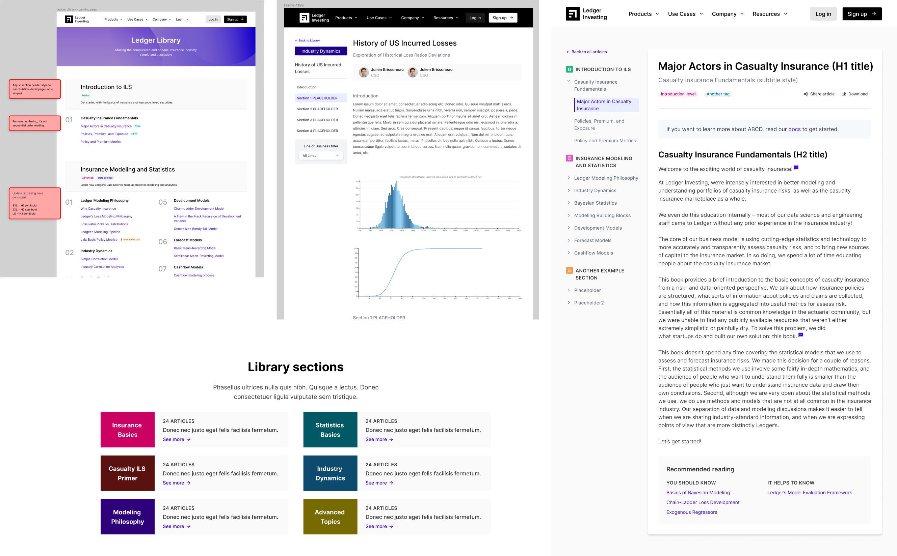I had experimented with the idea of the Ledger "Library" to house some of the existing materials.
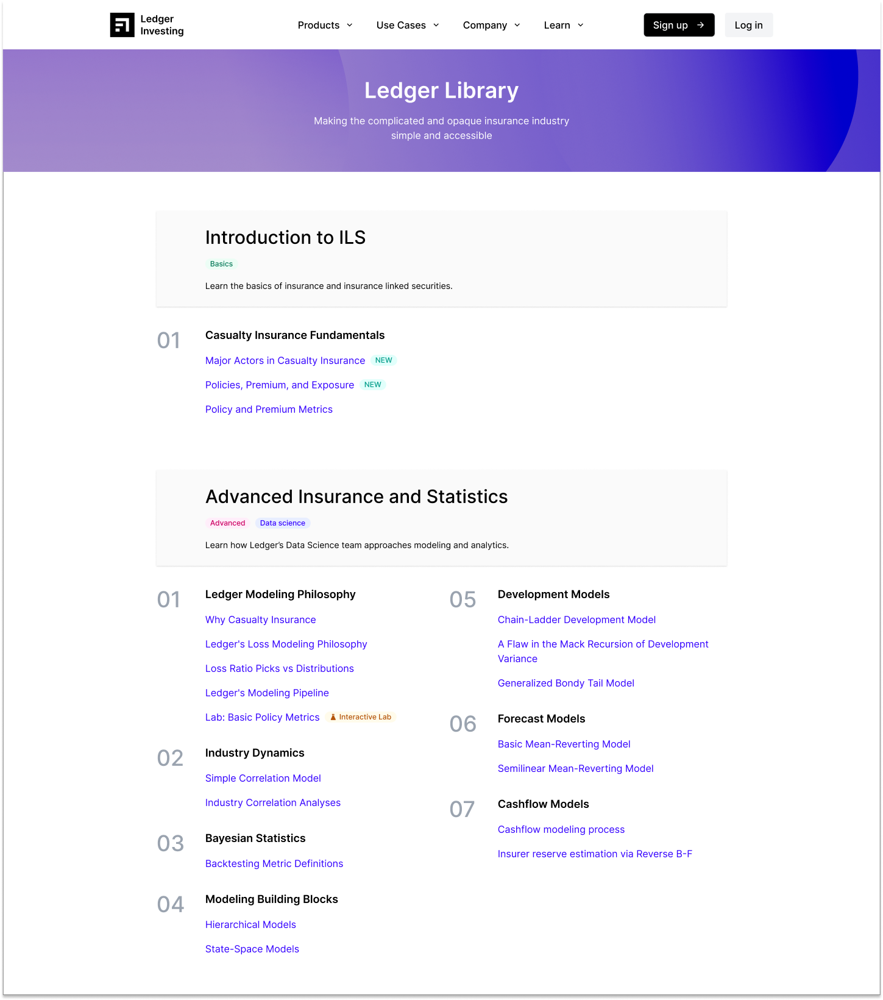The Library would be more like a storage and organization of the Data Science team's white papers, but could include some interactive "labs".
02. The old database
The old database was something the founding team had created to be the original platform. It leveraged publicly available data on various insurance companies' financial reports to build a foundational resource for investors. This version of the platform was never offically released.
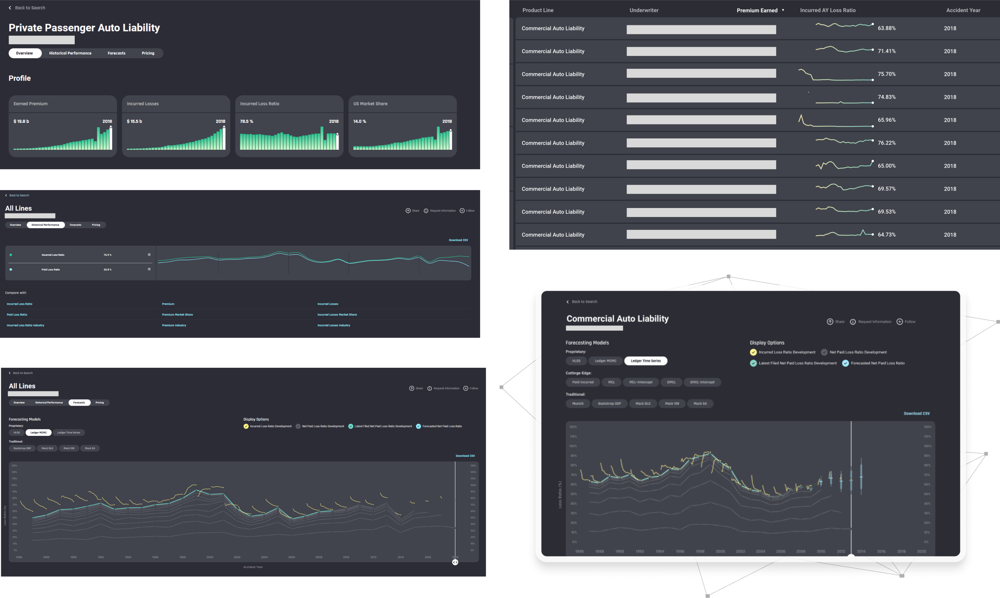Despite never being released, the sales teams would show the data and charts on it to potential customers as a show of Ledger's ability to gather and analyze data.
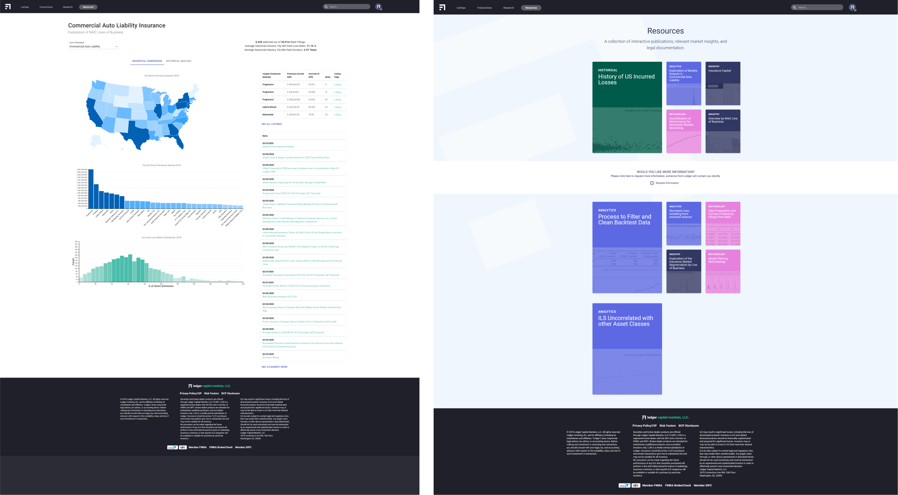A lot of data science writing by one of the Ledger cofounders (Julien) was also hosted here but no one to read it.
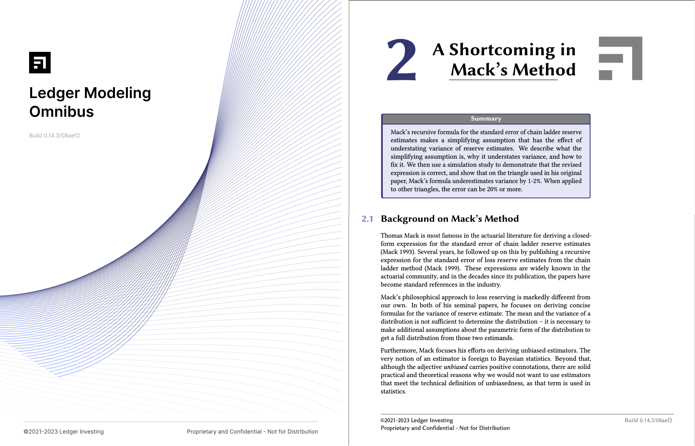
Separate from the old database, the Data Science team worked putting together their writing online in the form of a "wiki".
Note: it's not really a wiki, as it does not allows collaborative editing of its content and structure.
03. Design
So the goal we started out with was to take all this different pieces of content and resources and put them together on the website. The goal of this website would
be to
1. Have a location to show the charts and data that was also being shown in the Old Database for customers and non-customers
2. Also have a place for academic writing such as Data Science papers could be accessed.
3. Use this on our public facing website to position Ledger as a resource center and thought leader.
We started with the Industry data section.
The home page for the database shows a big total industry chart as well as breakdowns for multiple subsections ("lines of business") in the data set. The
search bar was something that the Data team worked hard on using Algolia to create intelligent search results.
It would be one of the main methods of navigation
besides the subsections as we believe that most of the users coming to the Industry database would know some of the names of Insurers and begin their exploration there.
The search bar dropdown would feature not only exact search terms, but also was designed to handle fuzzy searches and even related searches. To add to the depth of the Library, it could also cross-references into other articles and writing.
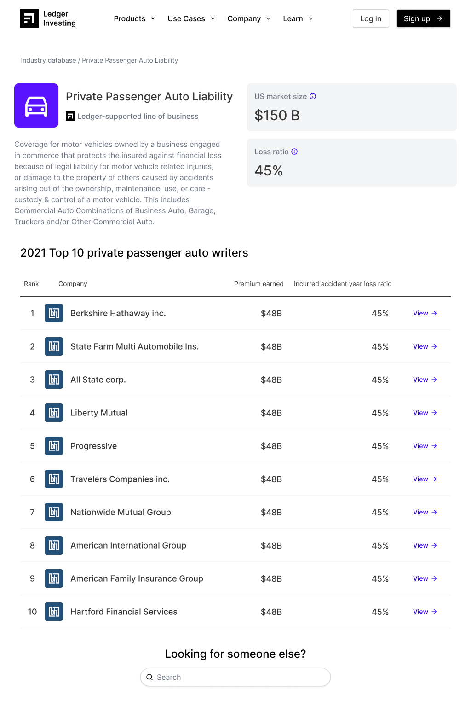The LOB ("Line of Business") page would give a snapshot view of that subsection of the US insurance industry. Along with a list of top 10 insurers. We wanted it to be possible for potential customers (Insurers) to come here to see how their numbers stacked up versus their competitors in the overall market. But of other customers (Investors) we wanted to show the potential for growth these Insurers had or the strength of their position.
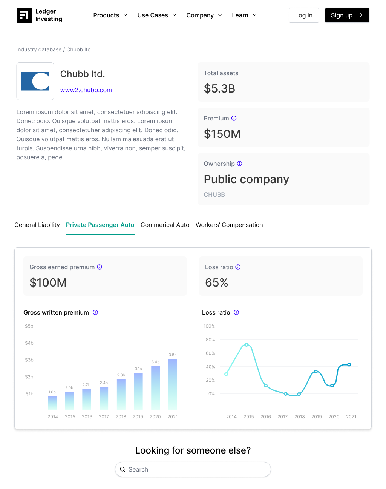The Insurer detail page allowed the viewer to dive deeper into that companies specific data. This would cover for all Lines of business that the Insurer covered.

There were even more charts we wanted to add in with Some being "locked" behind a sign up to get more viewers to commit into Ledger. This would 'gate' some of the more private data and resources.
There were some sections we started designing but probably for a future version such as having a section for media and presenatations. When I chatted with the Sales teams, they and the executives often did presentations at events. It would have been great for people who were at the event to be able to get the recorded presentation and even download the slides.
04. Hackathon
Our team rallied behind this idea as a project to work together in person. The product, engineering, and data teams met up in California to have a "hackathon" to see the fastest MVP we could build from the industry database project.

Our time frame was 3 days to refine the design, the messaging, connect the old database data stores and publish all the components from the front-end. It was a great time working in person with all the team
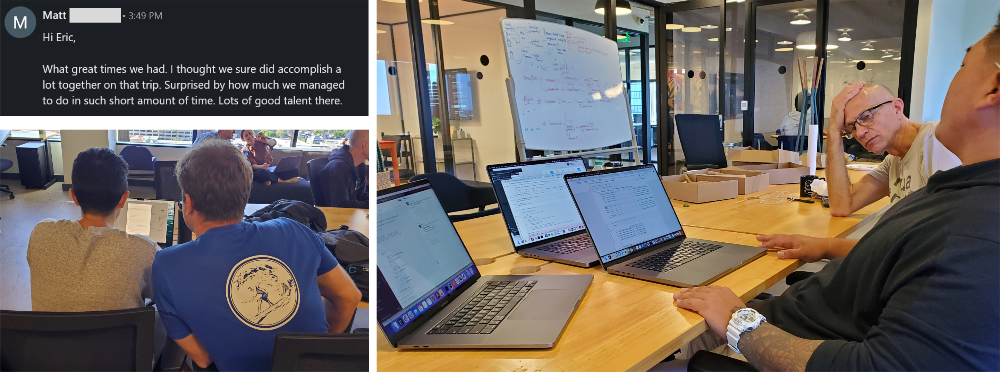05. Post-Hackathon
There were a few more chart updates and improvements we wanted to make post-hackathon. Largely still working on getting parity with the data shown on the Old Database.
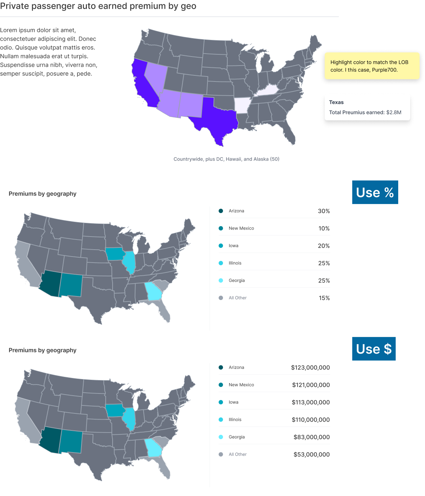In the old database, one stand out feature was having a lot of the data mapped geographically. Here we had a lot more data to map, so we were experimenting with how we can translate that various series of data by different metrics.
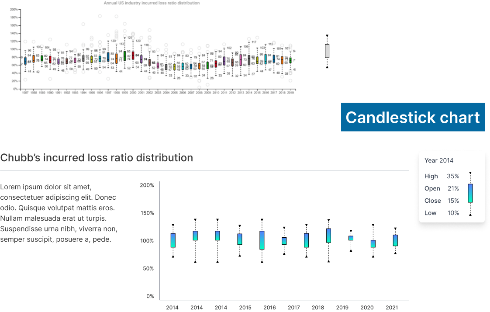Another section that we wanted to add into the Insurer detail page was adding in candlestick charts. This was a type of chart would have been more of our Investor customer base as it would be something they were more familiar with in looking at investment data.
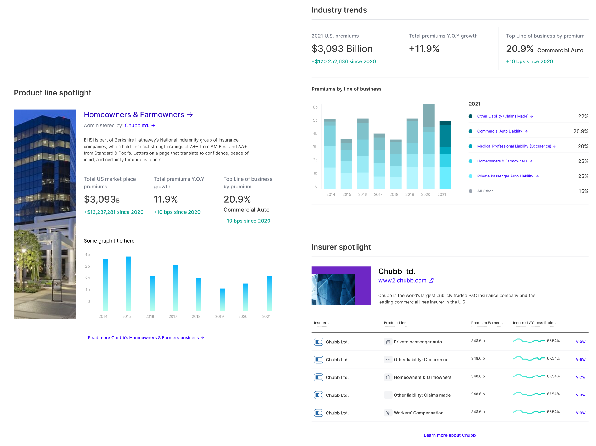We wanted even more ways for the viewer to explore our data set. Some ideas included adding in Insuer or Line of Buiness spotlight sections that would highlight a certain company or subsection of the US Insurance industry. Industry trends was an idea to show the direction of change over time in both the whole industry and in the specific subsections.